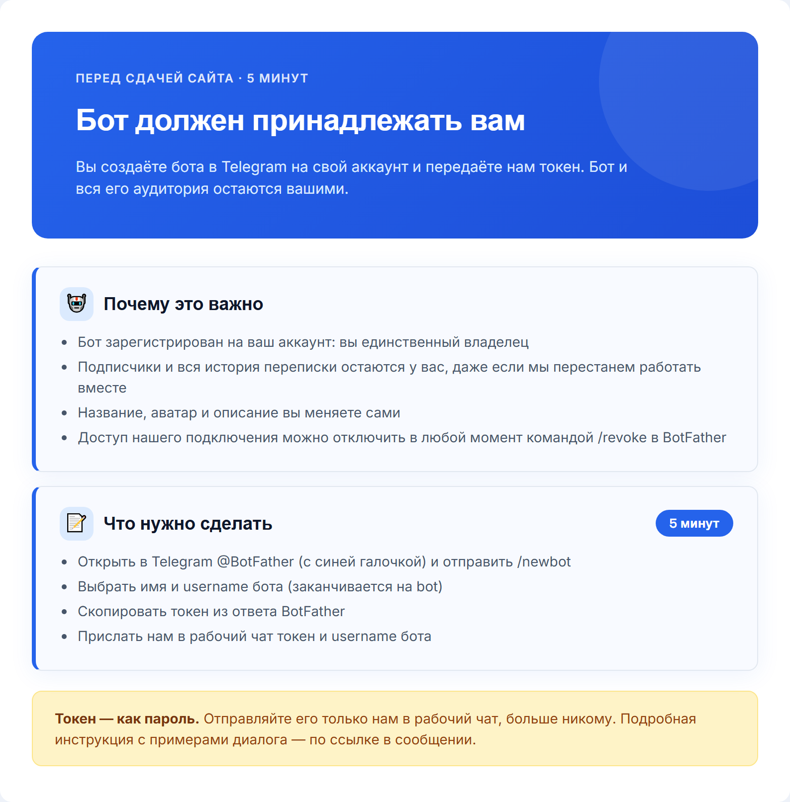

1
Без картинки
/первое_сообщение
Это рабочий чат — здесь будем вести ваш проект от сегодняшнего дня до поставленных задач. Рады, что вы с нами 🙏
2

/бриф
Ответьте на вопросы ниже — это нужно для точных целевых заявок. Нет ответа или не уверены — просто пропускайте. Можно голосовым. 🏢 О БИЗНЕСЕ 1. Сфера/ниша (напр.: психолог, брокер по новостройкам) 2. Конкретное предложение — что продаёте (напр.: «Продвижение Instagram») 3. Город(а) работы 4. Тип клиента: B2B / B2C / B2G 📊 ПОКАЗАТЕЛИ 5. Сколько клиентов сейчас в месяц (напр.: 5) 6. Желаемая выручка в месяц (напр.: 700 000 ₽) 7. Клиентский цикл (разовая покупка / подписка / долгий проект) 💰 УСЛУГИ И ЦЕНЫ 8. Список услуг с ценами, нумеруйте 8.1, 8.2... Напр.: 8.1 Курс — от 999 ₽, 8.2 Сессия 1.5ч — 7 500 ₽ 👤 АУДИТОРИЯ 9. Портрет идеального клиента (напр.: «Женщины 25-35, Москва») 10. Главная боль аудитории (напр.: «Нет заявок с сайта») 11. Ключевое возражение (напр.: «Дорого») 12. Измеримый результат (напр.: «+40% заявок») 13. УТП (напр.: «Первый месяц бесплатно») 🔗 Ссылки: ВК, ТГ, Instagram, бот, сайт, YouTube/Рутуб
3

/термины
Пара терминов, которые будут встречаться в переписке — коротко объясняем:
4

/путь_клиента
Вот как человек проходит путь от поиска в Яндексе до обращения к вам. Важно: это путь через поисковое продвижение. Заявки приходят не мгновенно, а нарастают по мере того, как сайт набирает позиции.
5

/бот_как_работает (вместо /прогрев_бота)
Так будет работать бот: человек приходит по ссылке с сайта, проходит мини-игру, а в финале получает гайд. Задания и тексты согласуем с вами.
6

Скачать файл/перенос_бота (новое, ПЕРЕД /сайт_отправка)
Перед тем как передать вам сайт, нужно перенести бота на ваш аккаунт. Сейчас бот создан в нашей системе. Правильно, чтобы он принадлежал вам: тогда бот, его аудитория и вся история переписки остаются у вас, даже если мы однажды перестанем работать вместе. Название, аватар и описание вы сможете менять сами. Что нужно сделать (5 минут): 1. Откройте в Telegram @BotFather (с синей галочкой) и отправьте команду /newbot 2. Выберите имя бота и username латиницей, он должен заканчиваться на bot 3. Скопируйте токен, который пришлёт BotFather 4. Отправьте нам сюда в чат токен и username бота Пошаговая инструкция с примерами диалога: https://murzzsite.github.io/bot-token-guide/ ❗ Токен — как пароль от бота. Отправляйте его только нам в этот рабочий чат, не публикуйте нигде и никому больше не показывайте. Когда пришлёте токен, мы подключим бота и сразу отправим вам готовый сайт.
7
Без картинки
/сайт_отправка
Здравствуйте! @{НИК_КЛИЕНТА}
Посадочная страница/сайт: {ССЫЛКА_НА_САЙТ}
Заявки с сайта приходят в Telegram-бот — активируйте его по ссылке: {DEEP_LINK_БОТА}
❗ Правки вносятся ТОЛЬКО один раз — соберите все в одно текстовое сообщение (скриншоты и голосовые не принимаются техспециалистом), если потребуется что-то поправить.
❗ Если нужно добавить фото — присылайте ТОЛЬКО ссылкой на Яндекс.Диск с открытым доступом («доступно всем, у кого есть ссылка»), мы извлечём фото оттуда. По-другому техспециалист и программа файлы не принимают.
❗ Когда напишете все правки, ОБЯЗАТЕЛЬНО добавьте фразу "это всё" — так мы поймём, что можно брать в работу.
Также нужно уточнить пару моментов:
{УТОЧНЕНИЕ_1}
{УТОЧНЕНИЕ_2}8

/упаковка_готова
Готов этап «Упаковка» — все материалы созданы. Пожалуйста, посмотрите отчёт и напишите: «Принимаю» — если всё устраивает, переходим к следующему этапу
9
/что_входит_в_7500 (одно сообщение вместо seo_предложение + распаковка + рекомендации + доп_материалы + сроки)
Здравствуйте! Предлагаем следующий шаг: перенести ваш сайт на собственный домен и запустить SEO-продвижение, чтобы заявки шли из поиска. Стоимость: 7 500 ₽, оплата разовая. В неё входит всё, что ниже (на картинке то же самое, со сроками). ЧТО МЫ СДЕЛАЕМ. ПОРЯДОК: СНАЧАЛА ДОМЕН, ПОТОМ МАТЕРИАЛЫ ЭТАП 1. САЙТ НА ВАШЕМ ДОМЕНЕ 1. Перенос сайта на ваш домен — 1–2 рабочих дня Подключим домен, включим защищённое соединение, настроим переадресацию со старого адреса, проверим формы, телефоны и бота. Пришлём ссылку на новый адрес. 2. SEO-настройка — 3–5 рабочих дней после переноса Подберём запросы ваших клиентов, пропишем заголовки и описания, сделаем страницы под услуги, настроим технические файлы, подключим Яндекс Вебмастер, Google Search Console и Метрику. Пришлём список сделанного. 3. Юридический минимум на сайте Политика конфиденциальности, согласие в формах и плашка cookie с вашими реквизитами. 4. Блог со статьями — от 1 статьи в неделю, начиная со 2-й недели Сами пишем статьи под запросы вашей ниши и публикуем на сайте. 5. Карточки на картах — до 3 рабочих дней Тексты и оформление для Яндекс Карт, 2ГИС и Google. ЭТАП 2. МАТЕРИАЛЫ — ПОСЛЕ ПЕРЕНОСА, НА ВАШЕМ ДОМЕНЕ Когда сайт переедет, все материалы будут лежать на вашем адресе (например, ваш-домен.ru/materials.html), а не на тестовом. Пришлём одним сообщением со ссылками. Заново заполнять бриф не нужно: всё собираем по вашим ответам. 6. Распаковка Рабочая тетрадь, уже заполненная по вашему брифу: финансовая модель, портреты клиентов, позиционирование и кейсы, таблица «вы и конкуренты», цепочка из 10 касаний для прогрева, дорожная карта. Плюс план переговоров: сценарий разговора с клиентом на 20–40 минут. Вы читаете и правите под себя. 7. Рекомендации 5 сценариев для видео, 5 готовых постов и 5 сторис (по одному в день, как прогрев), готовые тексты для Яндекс Карт, 2ГИС, Авито, ВК, Юду и Яндекс Услуг. Тексты и сценарии готовим мы, публикуете вы у себя. Если соцсетей пока нет, создайте их и начните с нашего контента. 8. Карта каналов для посевов в Telegram Таблица из 30–40 Telegram-каналов вашей аудитории: подписчики, охват поста, вовлечённость, индекс цитирования. Каналы разделены на «брать первыми», «резерв» и «не берём» (накрутка, сети одинаковых каналов, мёртвая аудитория). План первой волны: 5 каналов, даты размещений и 3 рекламных поста со ссылкой на вашего бота. Калькулятор стоимости 1000 просмотров и инструкция, как заказать размещение на бирже. Размещения вы оплачиваете отдельно, цены называют администраторы каналов. Результат посевов не гарантируем. 9. Три дополнительных материала под ваш оффер Скрипты продаж (как вести диалог, называть цену, отвечать на «дорого» и «я подумаю»), продающая презентация с вашим УТП, скрипт холодных сообщений потенциальным клиентам. 10. Отзывы QR-плакат «Оставьте отзыв» для печати и 10 готовых ответов на хорошие и плохие отзывы. Просить отзывы можно у реальных клиентов; покупать их нельзя. 11. Страница проекта и ежемесячный отчёт Одна постоянная ссылка на вашем домене: все материалы, статус работ и цифры (визиты, заявки, статьи, позиции). В начале каждого месяца добавляем итоги и план. Все страницы открываются и с телефона. ВАЖНО ПРО ДОМЕН: ПОНАДОБЯТСЯ ГОСУСЛУГИ Домен вы покупаете сами на reg.ru (около 200 ₽ в год), а мы подключаем к нему сайт. По Федеральному закону от 29.12.2025 № 569-ФЗ владелец домена в зонах .ru и .рф подтверждает личность через подтверждённую учётную запись Госуслуг. Поэтому заранее подготовьте аккаунт Госуслуг и телефон, к которому он привязан. Пошаговые инструкции пришлём после оплаты, сейчас просто будьте готовы. ЗАЧЕМ СВОЙ ДОМЕН Адрес сайта — его фундамент: вся история, статьи и позиции копятся именно на нём. Свой домен принадлежит вам, внушает клиентам больше доверия и позволяет подключить фирменную почту. Подробно: https://murzzsite.github.io/domain-guide/ Весь объём работ со скриншотами: https://murzzsite.github.io/seo-work-guide/ ЧЕСТНО О РЕЗУЛЬТАТЕ Первые заметные результаты в поиске обычно появляются через 2–4 месяца. Гарантировать позиции и число заявок нельзя: они зависят от конкуренции в вашей нише и регионе. Хотите заявки уже в первые дни? — Яндекс Директ (реклама для тех, кто уже ищет вашу услугу): https://murzzsite.github.io/direct-guide/ — VK Реклама (показ по интересам и возрасту во ВКонтакте): https://murzzsite.github.io/vk-ads-guide/ ЧТО ПО ОПЛАТЕ 7 500 ₽ — разовая оплата за всё перечисленное выше. Домен оплачивается отдельно напрямую у регистратора, примерно 200–1 000 ₽ в год (чаще всего хватает 200 ₽). Порядок такой: оплата, затем покупка домена и перенос, и только после этого передаём материалы. Если вам подходит, напишите слово «домен» в ответ на это сообщение, и мы начнём.
10
Без картинки
/оплата_принята (новое)
❗ ВАЖНО ПРО ДОМЕН: ПОНАДОБЯТСЯ ГОСУСЛУГИ
Домен регистрируете вы сами на reg.ru, это около 200 ₽ в год. Сделать это за вас мы не можем, потому что домен оформляется на ваши данные. Мы подключаем к нему сайт и переносим всё остальное.
По Федеральному закону от 29.12.2025 № 569-ФЗ владелец домена в зонах .ru и .рф подтверждает личность через подтверждённую учётную запись Госуслуг. Поэтому заранее подготовьте:
• аккаунт на Госуслугах (подтверждённый);
• телефон, к которому он привязан.
Пошаговую инструкцию по регистрации на reg.ru вышлем сразу после оплаты, сейчас просто будьте готовы. На этом этапе потребуется ваше участие, но это займёт несколько минут. Технический специалист будет на связи и подскажет по каждому шагу.
Оплатить перенос сайта (7 500 ₽, оплата разовая) можно по ссылке: {ССЫЛКА_НА_ОПЛАТУ}
Вышлите чек в чат, как проведёте оплату. После этого мы отправим инструкцию, технический специалист поможет зарегистрировать домен и сам перенесёт сайт.
Порядок такой: сначала перенос на домен и SEO-настройка, и только потом отправляем материалы (Распаковку, Рекомендации, карту каналов для посевов, скрипты, презентацию, отзывы): они лежат на вашем домене.11
Без картинки
/домен_regru (новое)
Следующий шаг — купить домен на reg.ru. Домен оформляется на вас, это 10–15 минут. Пошаговая инструкция со всеми шагами: https://murzzsite.github.io/regru-guide/ Коротко: 1. Зайдите на reg.ru, найдите свободный адрес (лучше короткий, латиницей, зона .ru — около 200 ₽ в год). 2. Добавьте домен в корзину, лишние услуги (хостинг, почту, защиту) уберите — они не нужны. 3. Зарегистрируйтесь, заполните данные владельца, подтвердите личность через Госуслуги и оплатите. 4. Пришлите сюда в чат логин и пароль от личного кабинета reg.ru и купленный адрес — программист сам подключит к нему ваш сайт. Пароль от Госуслуг нам не нужен, не присылайте его никому. После переноса рекомендуем сменить пароль в кабинете reg.ru. Перенос занимает 1–2 рабочих дня с момента получения доступа.
12
Без картинки
/сайт_на_домене (новое, ШАГ 1 после оплаты)
Готово, сайт переехал на ваш домен:
https://{ДОМЕН}
Что сделано:
• подключено защищённое соединение, настроена переадресация со старого адреса
• формы, телефоны и бот проверены
• подключены Яндекс Вебмастер, Google Search Console и Метрика с целью «Заявка»
• на сайте политика конфиденциальности, согласие в формах и плашка cookie
• тексты для карточек на Яндекс Картах, 2ГИС и Google готовы: {ССЫЛКА_НА_ТЕКСТЫ_КАРТОЧЕК}
Ваша постоянная страница проекта:
https://{ДОМЕН}/report/
Там будут цифры и статус работ. Сейчас в цифрах прочерки: первые заходы из поиска обычно появляются через 3–6 недель, топ-10 по средним запросам через 2–4 месяца при регулярных статьях. Гарантировать позиции и число заявок нельзя.
Первая статья выйдет на 2-й неделе, дальше от 1 в неделю: бот пришлёт её вам на согласование.
Про защищённое соединение: значок замка в браузере включится автоматически. Сертификат выпускает хостинг-площадка, и это происходит на её стороне, поэтому ускорить процесс мы не можем. Обычно это занимает от 15 минут до нескольких часов, в редких случаях до суток. Пока его нет, браузер может показывать пометку «Не защищено»: это временно, сайт при этом работает. Когда замок появится, мы включим принудительное шифрование и сообщим вам.
Домен обновляется по интернету постепенно, до 24 часов. Если у кого-то сайт открылся не сразу, попробуйте через пару часов, с другого устройства или в режиме инкогнито.
Материалы по проекту (Распаковка, Рекомендации, карта каналов для посевов, скрипты, презентация, отзывы) пришлём следующим сообщением. Они уже будут лежать на вашем домене.13
Без картинки
/домен_и_материалы (ЕДИНОЕ сообщение: перенос на домен + материалы + что нужно от клиента)
Здравствуйте! @{НИК_КЛИЕНТА}
Сайт переехал на ваш домен, а мы сделали пакет работ по SEO. Ниже что готово и что нужно от вас.
Ваш сайт: https://{ДОМЕН}
Страница проекта со всеми материалами, сохраните ссылку: https://{ДОМЕН}/report/
Что сделано на сайте:
• домен подключён, со старого адреса настроена переадресация
• форма заявок проверена: заявки с нового адреса приходят как обычно
• SEO-настройка: заголовки и описания, разметка, карта сайта, файл robots, четыре страницы под ваши услуги
• политика конфиденциальности, согласие в форме и плашка cookie
• написана первая статья блога, дальше от одной статьи в неделю
• готовы тексты, логотип и обложка для карточек на картах
Про защищённое соединение: значок замка в браузере включится автоматически. Сертификат выпускает хостинг-площадка, это на её стороне, и ускорить процесс мы не можем. Обычно от 15 минут до нескольких часов, в редких случаях до суток. Пока его нет, браузер может писать «Не защищено»: это временно, сайт работает. Когда замок появится, мы включим принудительное шифрование и сообщим вам.
Материалы лежат на вашем домене и открываются с телефона:
1. Распаковка
https://{ДОМЕН}/raspakovka.html
Финансовая модель, портреты клиентов, позиционирование, отстройка, цепочка из 10 касаний, дорожная карта и план переговоров. Заполнено по вашему брифу: прочитайте и поправьте то, что не совпадает с практикой.
2. Рекомендации
https://{ДОМЕН}/recommendations.html
5 сценариев видео, 5 постов, 5 сторис, тексты для площадок. Тексты готовили мы, публикуете вы.
3. Карточки на картах
https://{ДОМЕН}/cards.html
Тексты, логотип и обложка для Яндекс Карт, 2ГИС и Google.
4. Отзывы
https://{ДОМЕН}/reviews.html
QR-плакат и 10 шаблонов ответов на отзывы.
5. Карта каналов для посевов в Telegram
https://{ДОМЕН}/channels.html
Критерии отбора, калькулятор, план первой волны и три рекламных поста. Список каналов с цифрами мы дозаполним сами.
6. Три дополнительных материала
https://{ДОМЕН}/materials.html
Скрипты продаж, презентация, холодные сообщения.
Когда ждать результат: первые заходы из поиска обычно появляются через 3–6 недель, топ-10 по средним запросам через 2–4 месяца при регулярных статьях. Гарантировать позиции и число заявок нельзя.
Что нужно от вас:
1. Форма (ИП, самозанятость или ООО) и ИНН. Остальные реквизиты для политики возьмём из открытых реестров.
2. Адрес, телефон и график работы для карточек на картах. Если офиса для клиентов нет, так и напишите.
3. Подтвердить сайт в Яндекс Вебмастере и Google Search Console и создать счётчик Метрики. Это 10–15 минут, вход в аккаунты нужен только вам, пароли присылать не надо: https://{ДОМЕН}/webmaster.html
4. Запустить бота заявок: {DEEP_LINK_БОТА} В него приходят заявки с сайта и черновики статей с кнопкой «Опубликовать».
5. Когда заведёте карточки, пришлите ссылку на отзыв: поставим её в плакат.
❗ Правки вносятся ТОЛЬКО один раз — одним текстовым сообщением (скриншоты и голосовые не принимаются). Если правки в файле, присылайте ТОЛЬКО ссылкой на Яндекс.Диск или Google Диск.
❗ Когда напишете все правки, ОБЯЗАТЕЛЬНО добавьте фразу «это всё».14
Без картинки
/материалы_готовы (новое, ШАГ 2, только после переноса)
Здравствуйте! Все материалы по вашему проекту готовы и лежат на вашем сайте. Страница проекта со всем в одном месте, сохраните ссылку:
https://{ДОМЕН}/report/
1. Распаковка
https://{ДОМЕН}/raspakovka.html
Финансовая модель, портреты клиентов, позиционирование, таблица «вы и конкуренты», цепочка из 10 касаний, дорожная карта и план переговоров. Всё заполнено по вашему брифу, заново ничего заполнять не нужно: прочитайте и поправьте то, что не совпадает с практикой.
2. Рекомендации
https://{ДОМЕН}/recommendations.html
5 сценариев видео, 5 постов, 5 сторис, тексты для Яндекс Карт, 2ГИС, Авито, ВК, Юду и Яндекс Услуг. Тексты готовили мы, публикуете вы у себя.
3. Карта каналов для посевов в Telegram
https://{ДОМЕН}/channels.html
Каналы вашей аудитории с охватом и вовлечённостью, список «не берём», план первой волны, три рекламных поста и калькулятор стоимости 1000 просмотров. Размещения оплачиваете вы отдельно, цены называют администраторы каналов.
4. Три дополнительных материала
https://{ДОМЕН}/materials.html
Скрипты продаж, презентация и скрипт холодных сообщений.
5. Отзывы
https://{ДОМЕН}/reviews.html
QR-плакат для печати и 10 шаблонов ответов на отзывы. Когда заведёте карточку на картах, пришлите ссылку на отзыв: поставим её в плакат.
Все страницы открываются и с телефона.
❗ Правки вносятся ТОЛЬКО один раз — одним текстовым сообщением (скриншоты и голосовые не принимаются). Если правки в файле, присылайте ТОЛЬКО ссылкой на Яндекс.Диск или Google Диск.
❗ Когда напишете все правки, ОБЯЗАТЕЛЬНО добавьте фразу «это всё».
Для документов и подвала сайта нужно от вас только: форма (ИП, самозанятость или ООО) и ИНН. Остальное у нас уже есть.15
Без картинки
/отчёт_месяца (новое, раз в месяц)
Итоги месяца на вашей странице проекта: https://{ДОМЕН}/report/
Вышло статей: {N}. Визитов из поиска: {N}. Заявок: {N}. Запросов в топ-10: {N} из {N}.
План на следующий месяц в конце страницы.
Вопросы пишите сюда.16

/платформа_регистрация
Что нужно сделать дальше:
1. Зарегистрируйтесь в личном кабинете по ссылке:
{ССЫЛКА_НА_ПЛАТФОРМУ}
Инвайт-код: {ИНВАЙТ_КОД}
2. После регистрации подтвердите аккаунт через e-mail и пришлите нам логин и пароль — чтобы мы подключили ваш проект.
3. Прикрепите в личном кабинете подписанный акт — без него кабинет остаётся заблокирован.
4. В кабинете вы увидите задачи по проекту и отчёты по ним. Распаковку, Рекомендации и остальные материалы мы пришлём ссылками на вашем домене после переноса сайта.17
Без картинки
/видео_кабинет
Прикрепляем короткое видео, как работать в личном кабинете:
{ССЫЛКА_НА_ПЛАТФОРМУ}
Что в видео: как пользоваться кабинетом, как смотреть задачи и как прикладывать отчёты к выполненным задачам.
Распаковка, Рекомендации и остальные материалы лежат не в кабинете, а на вашем домене. Мы пришлём ссылки отдельным сообщением после переноса сайта.
После просмотра:
1. Откройте задачи в кабинете и проходите их по порядку
2. Прикладывайте отчёты к выполненным задачам — так быстрее проверим
Вопросы — пишите сюда 🙂18


/ускорители (вместо /подрядчики)
Если захотите получать заявки быстрее, чем набирает вес SEO, можно параллельно подключить платные каналы — это отдельный бюджет, подключаем только по вашему желанию. Список и цены — на картинке. Пишите — согласуем и запустим.